LAB5 Report
Author: Adeniyi Ridwan Adetunji
Date: 2025-11-20
Check readme.txt for course work statement and self-evaluation.
T1 Apache Cassandra (lab practice)
T1.1 Cassandra installation
Complete? Yes
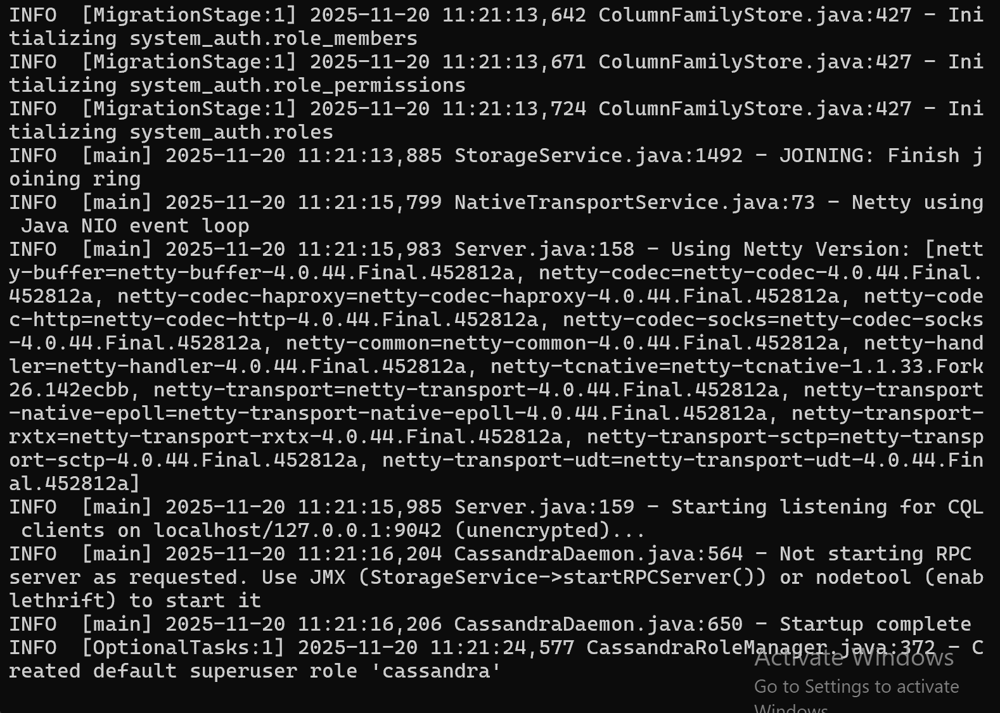cassandrainstall
T1.2 CQL operations through cqlsh
Complete? Yes
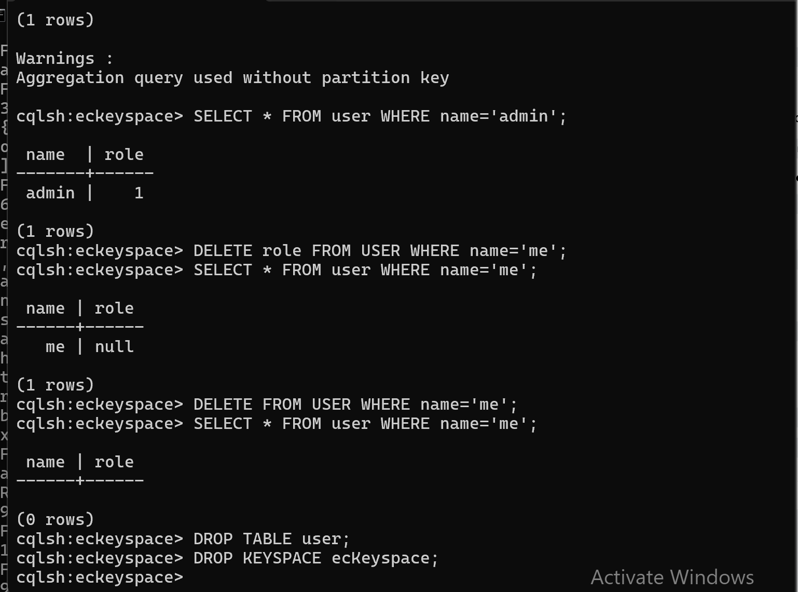cqloperation
T1.3 CQL programming in Java
Complete? Yes
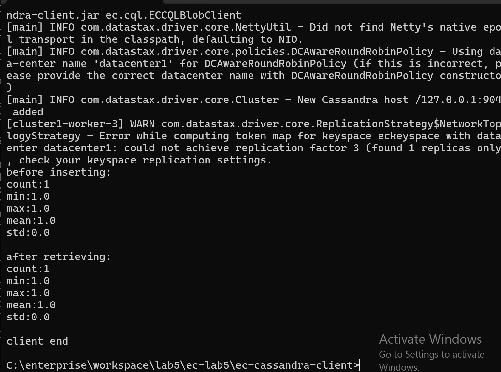cqlprogrammingjava
T2 Apache Hadoop and HDFS (lab practice)
T2.1 Hadoop installation
Complete? Yes
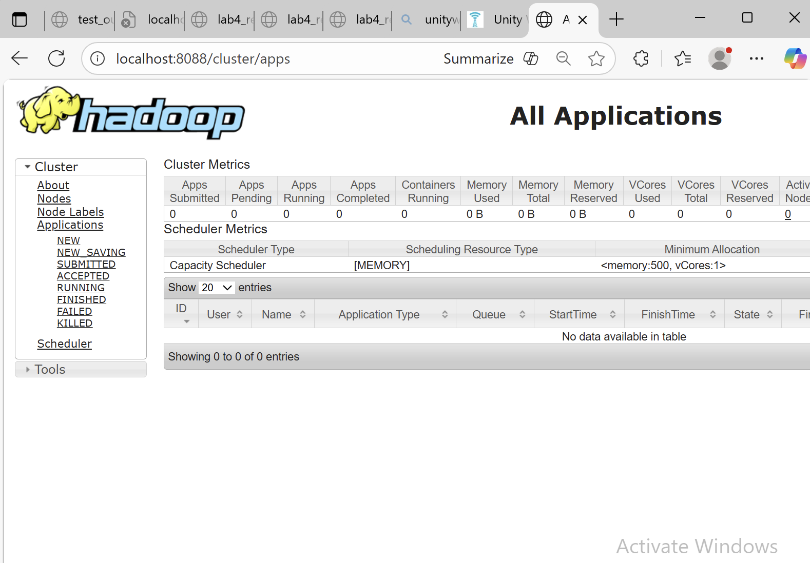hadoopinstall
T2.2 HDFS CLI operations
Complete? Yes
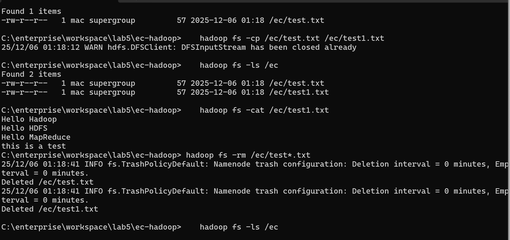HDFSCLIoperations
T2.3 HDFS client programming
Complete? Yes
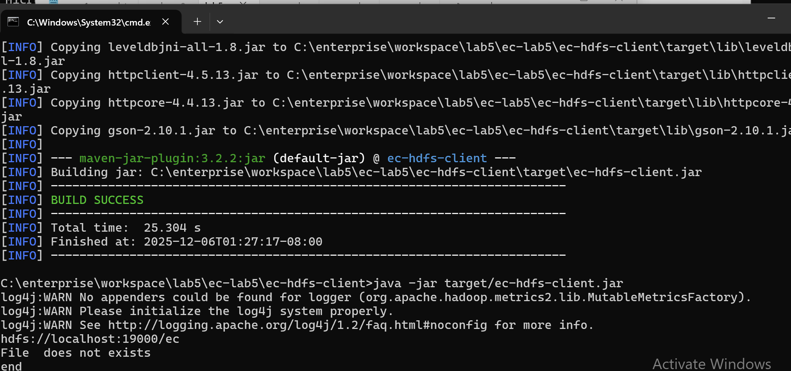HDFSclientprogramming
T3 Hadoop MapReduce (lab practice)
T3.1 Word counter example
Complete? Yes
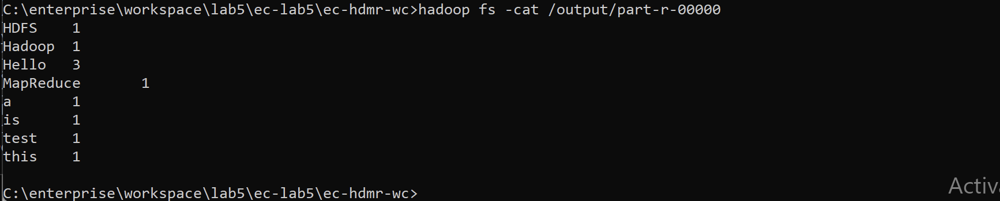Wordcounterexample
T3.2 Kmeans by Hadoop MapReduce
Complete? Yes
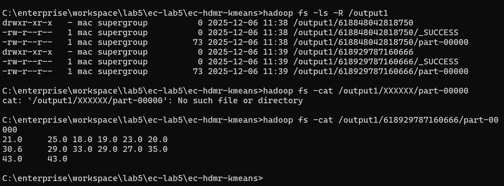KmeansbyHadoopMapReduce
T4 Apache Spark (lab practice)
T4.1 Spark installation
Complete? Yes
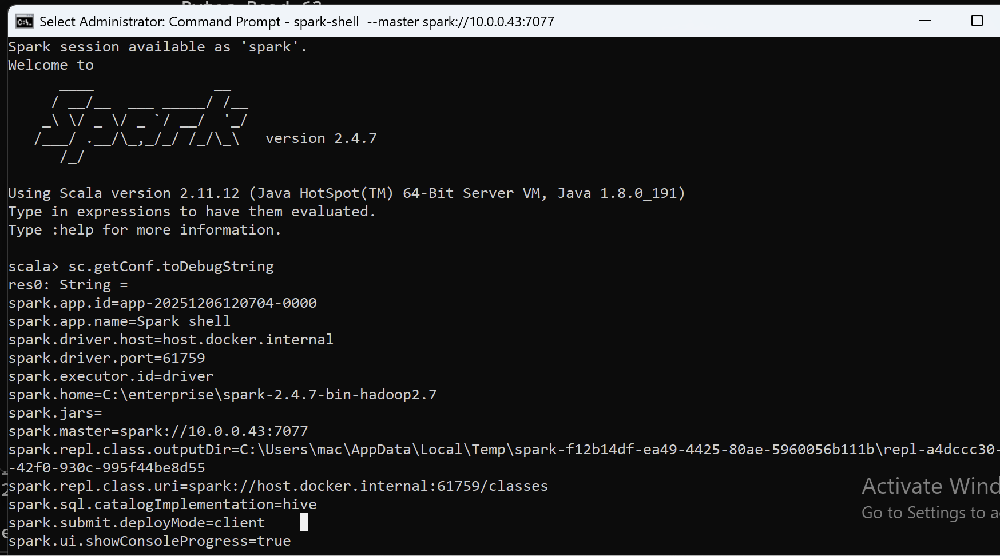 
T4.2 Spark operations in Scala shell
Complete? Yes
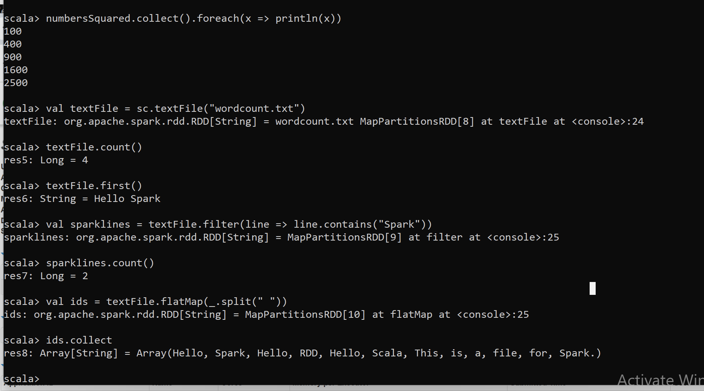SparkoperationsinScalashell
T4.3 MapReduce with Spark
Complete? Yes
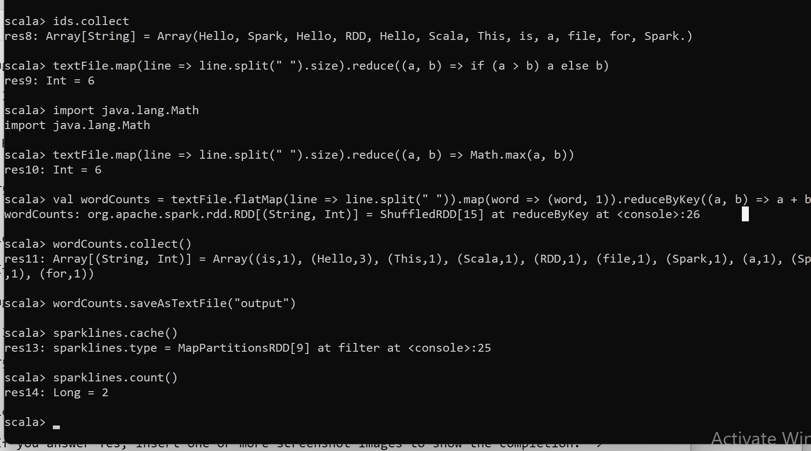MapReducewithSpark
T4.4 Spark programming in Java
Complete? Yes
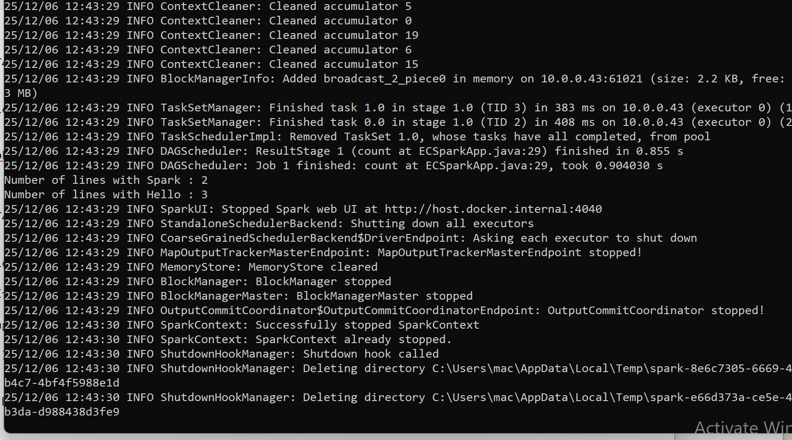SparkprogramminginJava
T5.1 Installation and testing
Complete? Yes 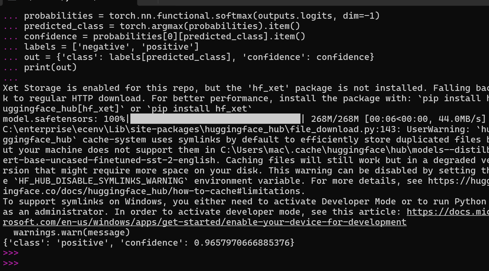
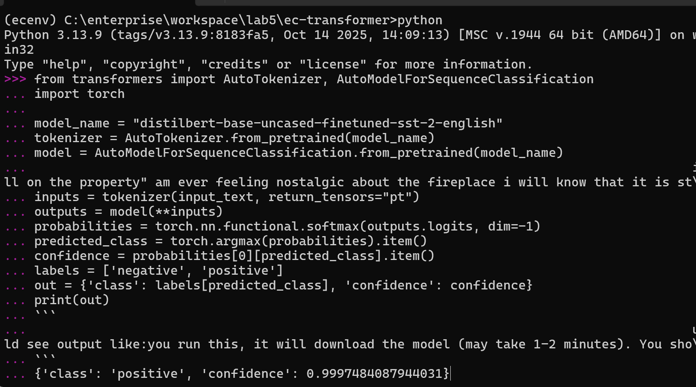51Installationandtesting
T5.2 Using pretrained models
Complete? Yes
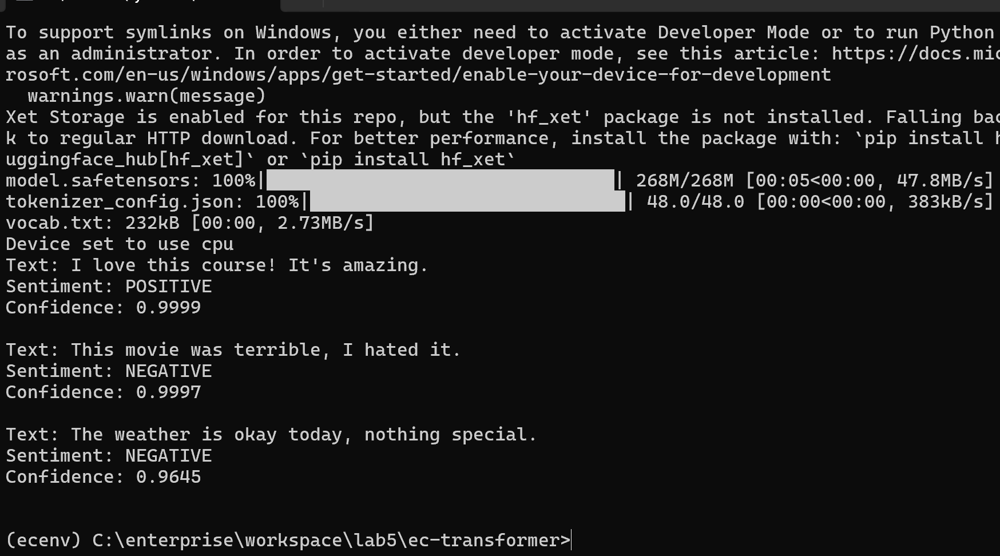Usingpretrainedmodels
Complete? Yes
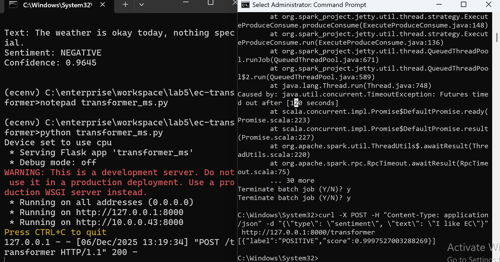Creatingmicroserviceontransformers
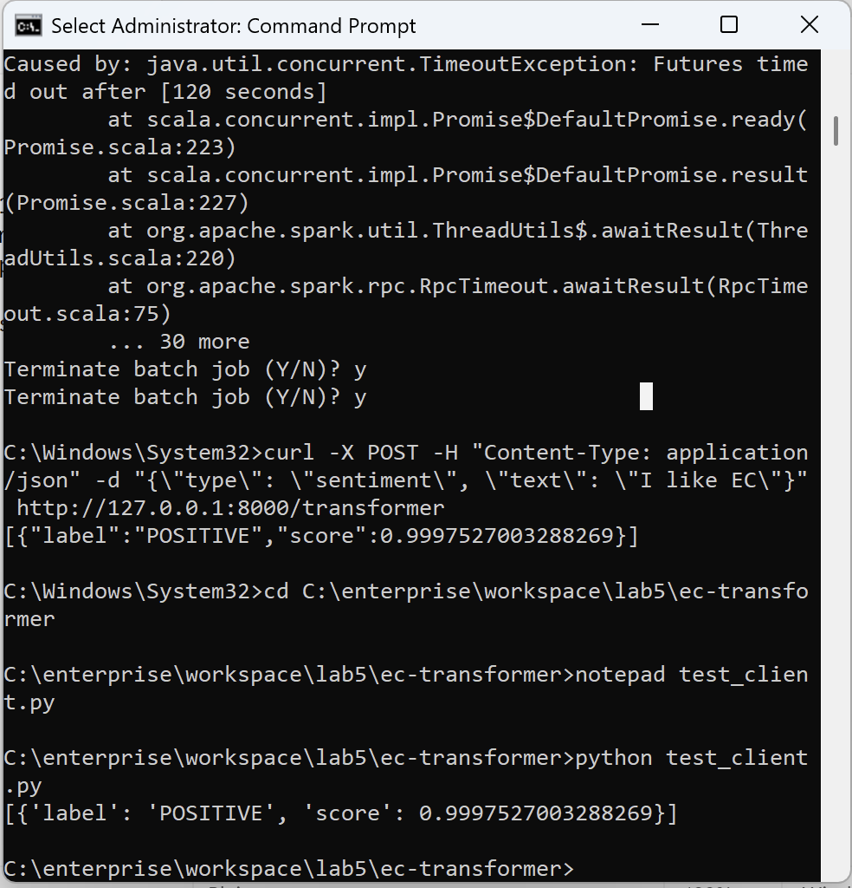Creatingmicroserviceontransformers1
References
- CP630OC lab5
- Add your references if you used any.